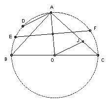
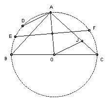

| A1. S is the set of all (h, k) with h, k non-negative integers such that h + k < n. Each element of S is colored red or blue, so that if (h, k) is red and h' ≤ h, k' ≤ k, then (h', k') is also red. A type 1 subset of S has n blue elements with different first member and a type 2 subset of S has n blue elements with different second member. Show that there are the same number of type 1 and type 2 subsets. |
|
|
A2. BC is a diameter of a circle center O. A is any point on the circle with angle AOC > 60o. EF is the chord which is the perpendicular bisector of AO. D is the midpoint of the minor arc AB. The line through O parallel to AD meets AC at J. Show that J is the incenter of triangle CEF.
 |
|
| A3. Find all pairs of integers m > 2, n > 2 such that there are infinitely many positive integers k for which (kn + k2 - 1) divides (km + k - 1). |
|
| B1. The positive divisors of the integer n > 1 are d1 < d2 < ... < dk, so that d1 = 1, dk = n. Let d = d1d2 + d2d3 + ... + dk-1dk. Show that d < n2 and find all n for which d divides n2. |
|
| B2. Find all real-valued functions f on the reals such that (f(x) + f(y)) (f(u) + f(v)) = f(xu - yv) + f(xv + yu) for all x, y, u, v. |
|
| B3. n > 2 circles of radius 1 are drawn in the plane so that no line meets more than two of the circles. Their centers are O1, O2, ... , On. Show that ∑i<j 1/OiOj ≤ (n-1)π/4. |
|

To avoid possible copyright problems, I have changed the wording, but not the substance, of the problems.
IMO home
© John Scholes
jscholes@kalva.demon.co.uk
27 July 2002
Last corrected/updated 27 Jul 2002